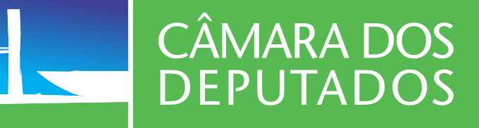
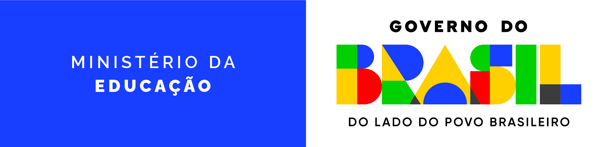
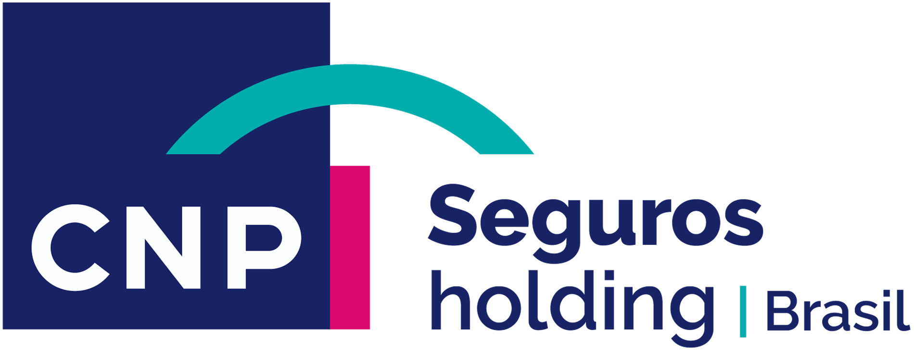
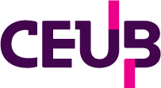

— |
Brasília, DF
Estéfano
Pietragalla.
Construo soluções digitais baseadas em pesquisa com usuários aliando rigor científico, estratégia e métricas de impacto. Já liderei frentes complexas de design e pesquisa em instituições como Banco do Brasil, CNP Seguros Holding Brasil e Tribunal de Contas da União. Acredito que a maturidade de produto nasce de processos estruturados, alinhamentos claros e tomadas de decisão guiadas por dados realistas.
01 — sobre
Conecto rigor científico, literatura especializada e métricas de impacto de negócio.
São mais de 8 anos construindo produtos digitais em ecossistemas de alta complexidade, em uma jornada que se consolidou na estruturação de processos de design e DesignOps no TCU, passou pelo mapeamento de jornadas na CNP Seguros e, hoje, se aprofunda em estratégias estruturadas de UX Research em frentes de experiência do usuário na Caixa Econômica Federal.
Como especialista e líder em frentes de UX, guio processos de design estruturados e metodologias de pesquisa que conectam tecnologia, produto e negócio através de métricas de impacto reais. Utilizando minha bagagem em docência e mentoria, lidero o ciclo completo da experiência do usuário (End-to-End) para alinhar expectativas com lideranças e stakeholders, garantindo que o respeito rigoroso a cada etapa do processo, do Discovery à entrega, resulte em documentações e handoffs de alta precisão que elevam a maturidade dos times e tornam o valor do design visível e mensurável para o negócio.
"Design is how it looks and how it works.— Dan Saffer
Because how it looks indicates how it works."
02 — o que faço
UX Research
Analiso os comportamentos e necessidades dos usuários para gerar insights que orientem as decisões estratégicas de design e produto.
Product Design
Crio soluções digitais centradas no usuário, combinando pesquisa, usabilidade e negócios para entregar produtos eficientes e relevantes.
DesignOps
Organizo processos, padrões e ferramentas que otimizam operações de design, garantindo consistência e escalabilidade dos produtos.
03 — minha jornada




Caixa Econômica Federal
Senior UX Researcher
Atuo como especialista em UX Research direcionando a estratégia de investigação e descoberta contínua em plataformas financeiras complexas, em um contexto multi-squad focado em ecossistemas bancários PJ e soluções digitais de grande escala. Conecto dados comportamentais, Discovery e a estratégia de negócio para gerar impacto na eficiência operacional e na qualidade da experiência.
Conduzo iniciativas de pesquisa aprofundada, testes de usabilidade e mapeamento de jornadas críticas para sistemas massivos e ecossistemas regulados, com foco em eliminar a fricção em fluxos de alta densidade de informação e aumentar a assertividade das entregas.
testes
de usabilidade conduzidos
pain points
identificados
Insights
gerados
Banco do Brasil
Customer Experience Designer
Atuei como especialista líder de UX no Banco do Brasil, dividindo minha atuação técnica entre o mapeamento de processos e o direcionamento estratégico do produto. Em uma frente voltada à governança e educação, atuei como Content Designer apoiando equipes de UX e conduzi uma pesquisa diagnóstica profunda para mapear o nível de maturidade de design dos times da instituição, estruturando um plano de melhorias metodológicas. Em paralelo, liderei a reestruturação da plataforma de Folha de Pagamentos Digital PJ, onde apliquei avaliações heurísticas rigorosas e redesenhei toda a jornada do usuário para mitigar erros operacionais e otimizar fluxos financeiros em larga escala.
Estive também à frente da padronização e da concepção de painéis de visualização de dados (Dashboards) do time de Analytics, traduzindo grandes volumes de dados analíticos em interfaces gerenciais intuitivas para o alto escalão do banco. Conectando redação estratégica, pesquisa de maturidade, arquitetura de informação e Data Visualization, garanti que frentes complexas de produto estivessem diretamente alinhadas à eficiência e à inteligência de negócios da instituição.
avaliações
heurísticas aplicadas
jornadas do usuário
mapeadas e estruturadas
dashboards
desenhados
CNP Seguros Holding Brasil
Senior Service Designer
Durante minha trajetória na CNP Seguros, minha abordagem concentrou-se na visão sistêmica e metodologias de Service Design. Fui o responsável técnico pela reestruturação de ponta a ponta do Portal do Prestador, utilizando Service Blueprint para desatar nós operacionais e mapear os bastidores da interação entre clientes, parceiros e sistemas de backoffice. Conduzi pesquisas combinando dados quantitativos de formulários a análises qualitativas aprofundadas.
No refinamento do craft técnico, combinei Card Sorting e testes de percepção no Maze para remodelar a navegação e a hierarquia de ecossistemas B2B e B2C. Toda a validação de fluxos e layouts foi feita através de protótipos navegáveis de alta fidelidade criados no Figma, vinculados ao repositório visual dos produtos. Essa atuação garantiu a redução do tempo de tarefas operacionais e entregou uma arquitetura limpa em produtos do tipo SaaS.
processo de UX
design end-to-end entregue
service blueprints
desenvolvidos
pesquisas
entre quali e quanti roteirizadas, aplicadas e analisadas
Tribunal de Contas da União
Senior Product Designer
No Tribunal de Contas da União, liderei o ciclo completo de design (UX End-to-End) do sistema CONECTA-TCU, do Discovery inicial ao handoff refinado para o desenvolvimento. Atuei como facilitador de metodologias ágeis de inovação, guiando workshops de Design Sprints e sessões de Design Critiques com stakeholders e equipes de desenvolvimento. Minha liderança técnica garantiu a estruturação de Personas precisas, testes de usabilidade recorrentes e a conformidade do sistema com padrões rígidos de Acessibilidade Digital (eMAG).
A eficiência de escala nessa experiência foi conquistada através da concepção do Design System governamental e da especificação de Design Tokens via código e ferramentas de design, diminuindo drasticamente o retrabalho técnico e a dívida de software. Como líder do time de DesignOps, organizei fluxos de processos padronizados no setor de TI, o que elevou a maturidade da equipe interna de design.
processo de UX
design end-to-end entregue
design sprints
facilitados
design system
desenvolvido, entregue e evoluído
05 — o que acredito
Design baseado em evidências e literatura
Acredito que decisões técnicas seguras não nascem do subjetivismo, mas do poder do estudo e da literatura especializada. Utilizo o rigor acadêmico, consolidado em meu mestrado e docência, para embasar escolhas de UX, garantindo que cada solução tenha fundamento teórico e prático antes mesmo da execução.
Decisões baseadas em dados
Sem dados, o design torna-se apenas uma opinião subjetiva. Utilizo métricas de UX e análises quantitativas de comportamento para validar hipóteses e mensurar o impacto real de cada entrega no produto. Monitorar e interpretar esses indicadores é o que conecta o trabalho técnico do time diretamente aos KPIs e objetivos estratégicos do negócio, transformando esforço criativo em retorno financeiro e eficiência operacional mensurável.
O poder da articulação e das conversas
Nenhum produto sobrevive ao isolamento; acredito na construção de conexões através de conversas contínuas e alinhamentos organizados com lideranças, times técnicos e stakeholders. Manter todas as áreas falando a mesma língua e com expectativas combinadas é o que transforma ruído em clareza estratégica para o roadmap.
Processo de Design
Acredito que o sucesso de um produto é o resultado direto do respeito ao processo de UX em todas as suas etapas: do Discovery à entrega. Quando respeitamos o tempo e a metodologia de cada fase, pesquisa, ideação, prototipação e testes de usabilidade, a tendência é a criação de soluções que resolvem problemas reais de forma sustentável.
06 — laboratório
Dashboard Analítico SUS
Supermotor quantitativo que processa arquivos CSV em lote. Converte automaticamente a escala Likert, calcula intervalos de confiança, divide subescalas de usabilidade/aprendizado e correlaciona os dados com as Heurísticas de Nielsen.
Avaliador de Maturidade
Interface corporativa para auditoria de maturidade em design baseado no modelo do NN/g. Consolida diagnósticos entre quatro pilares organizacionais, plota desbalanços estruturais via gráficos de radar e simula cenários macroeconômicos futuros.
Mapeador Heurístico
Dashboard avaliativo para condução de inspeções de usabilidade em tempo real. Consolida violações baseadas nas 10 Heurísticas de Nielsen, calcula índices ponderados de criticidade por categoria e exporta relatórios estruturados para engenharia.
Analisador PURE
Ferramenta quantitativa focado na modelagem PURE para identificação de atrito cognitivo. Processa auditorias via upload de matrizes CSV, calculando índices de paridade interavaliadores pelo modelo estatístico de Krippendorff.
Calculadora UMUX
Dashboard analítico para processamento ágil de usabilidade percebida através dos frameworks científicos UMUX (4 itens) e UMUX-LITE (2 itens). Realiza a conversão psicométrica automatizada e regressão linear para gerar scores equivalentes na escala do SUS (0-100).
Suíte de Privacidade UX (LGPD)
Mecanismo autônomo para conformidade com a LGPD em pesquisas. Permite a emissão offline de TCLE com assinatura digital por toque/mouse e realiza o mascaramento e desidentificação automática de dados sensíveis antes do compartilhamento.